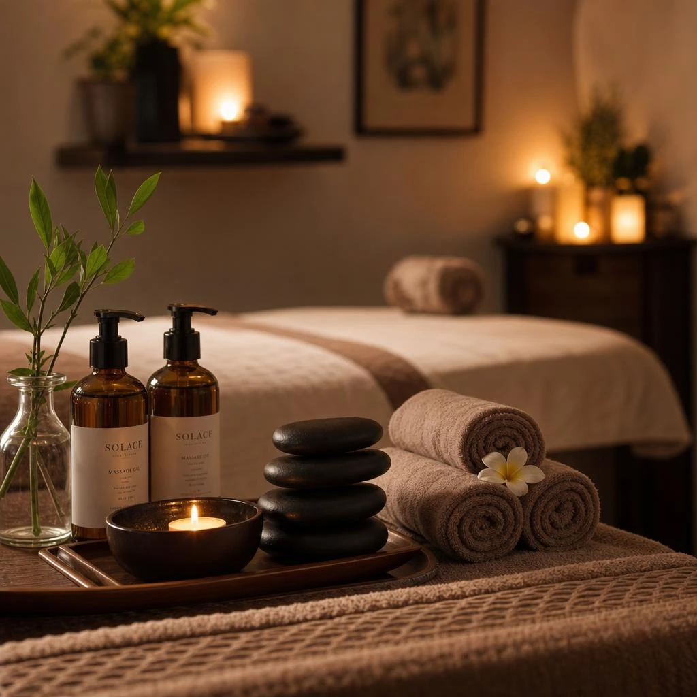
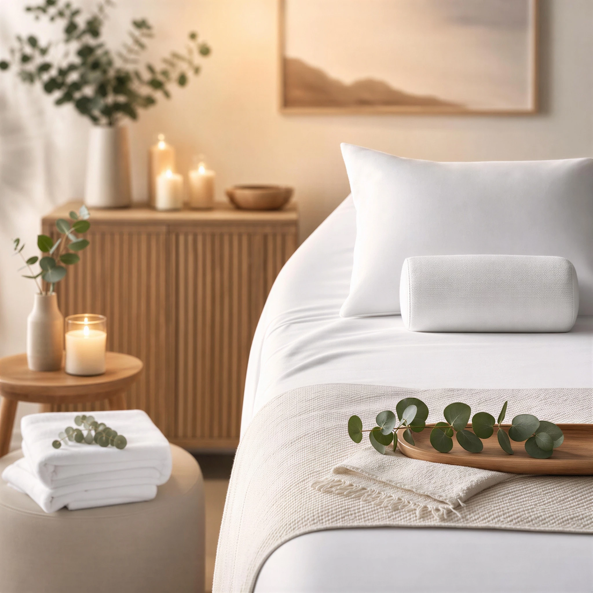
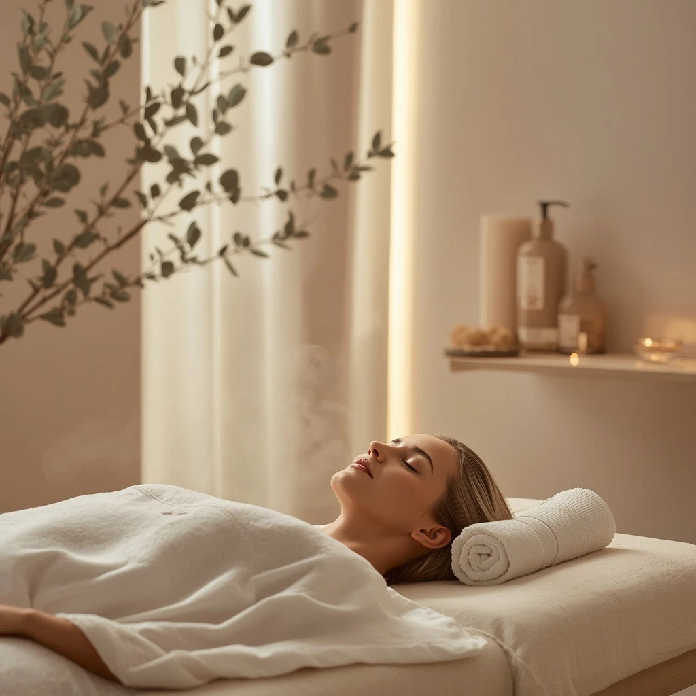
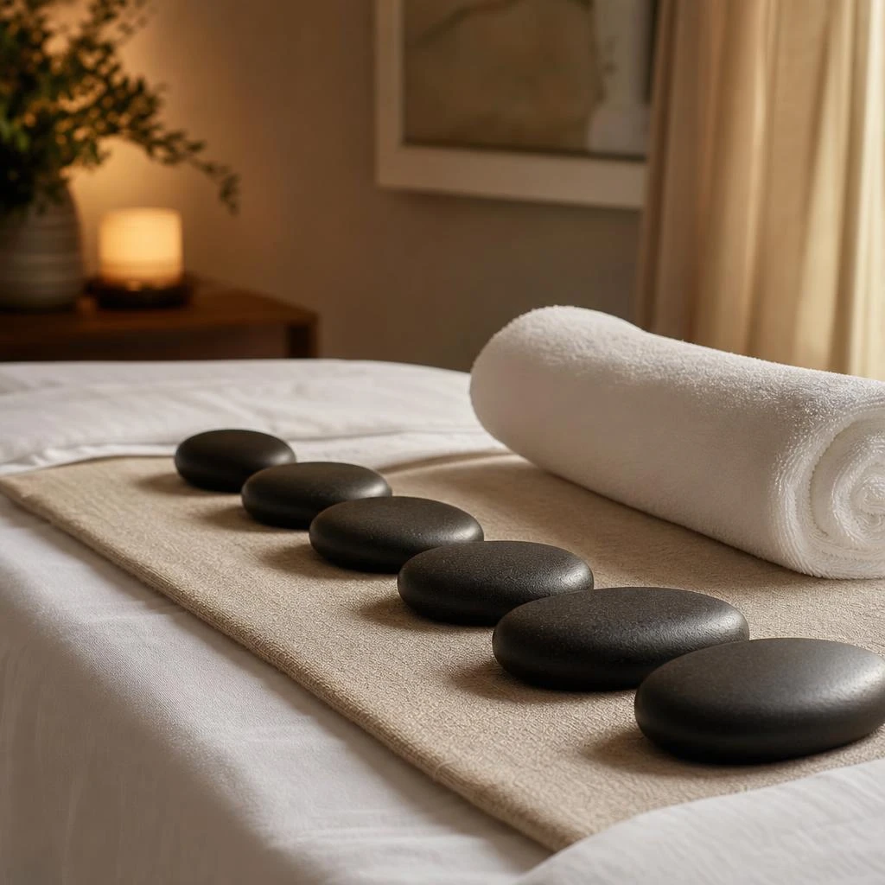
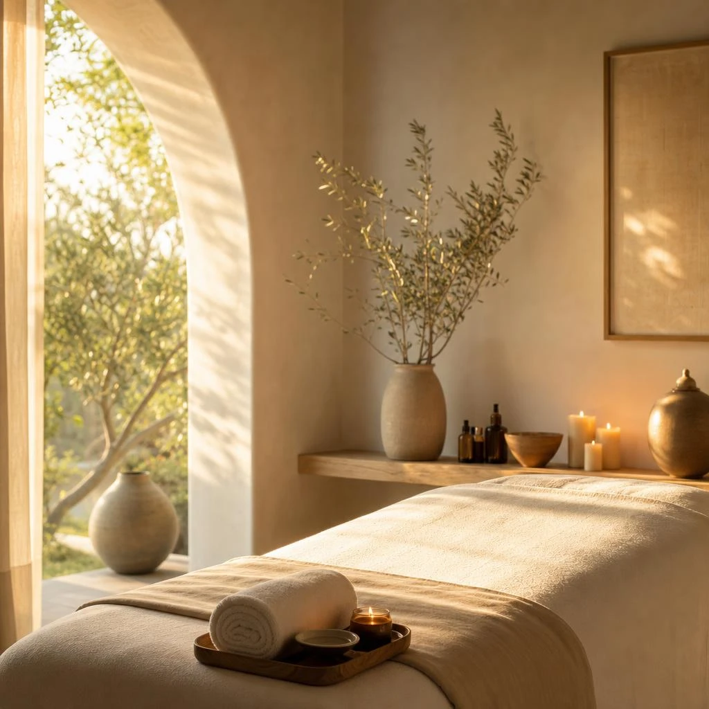
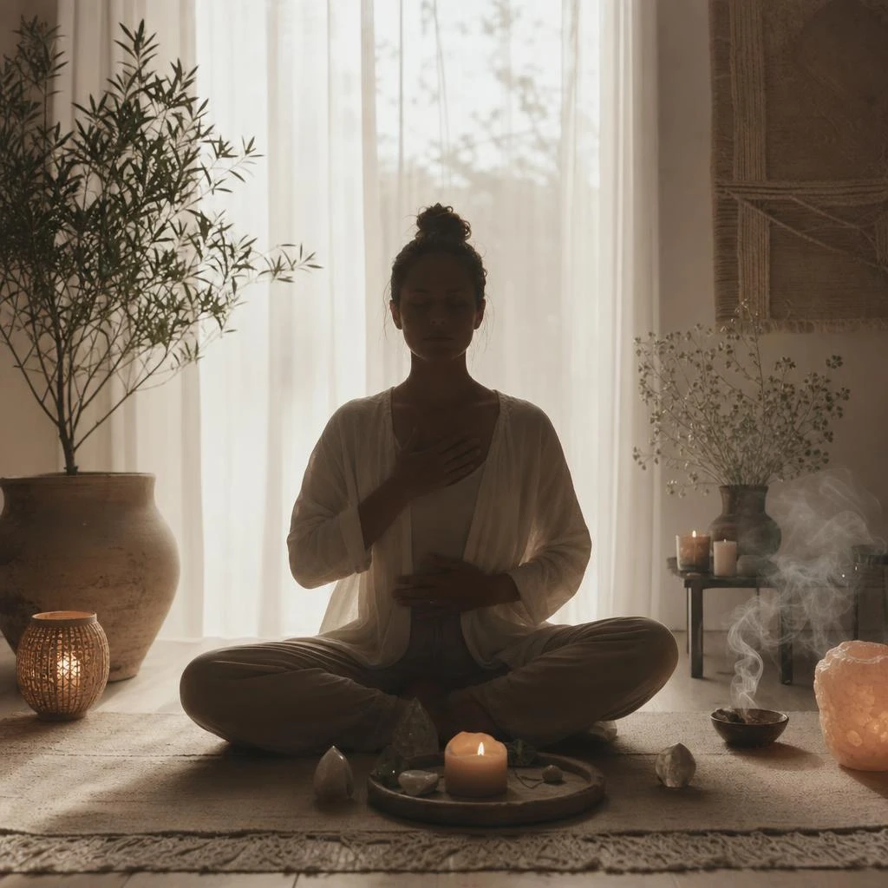
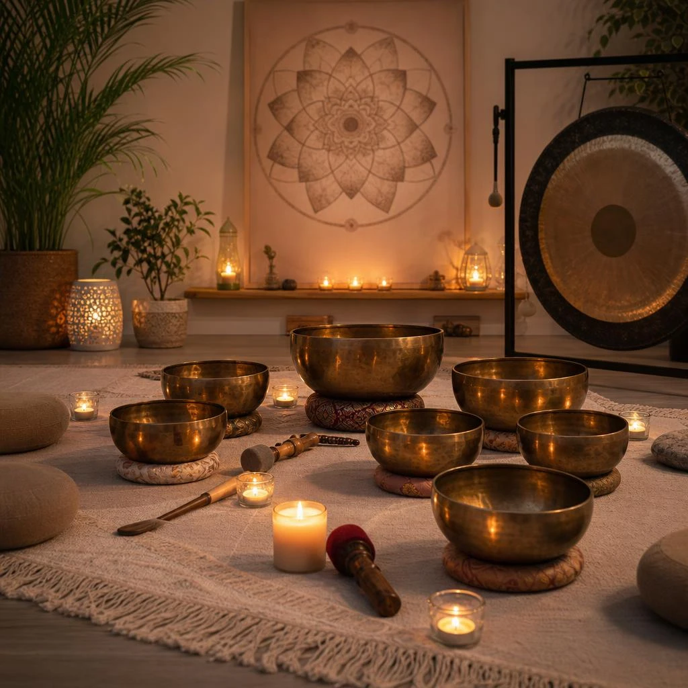
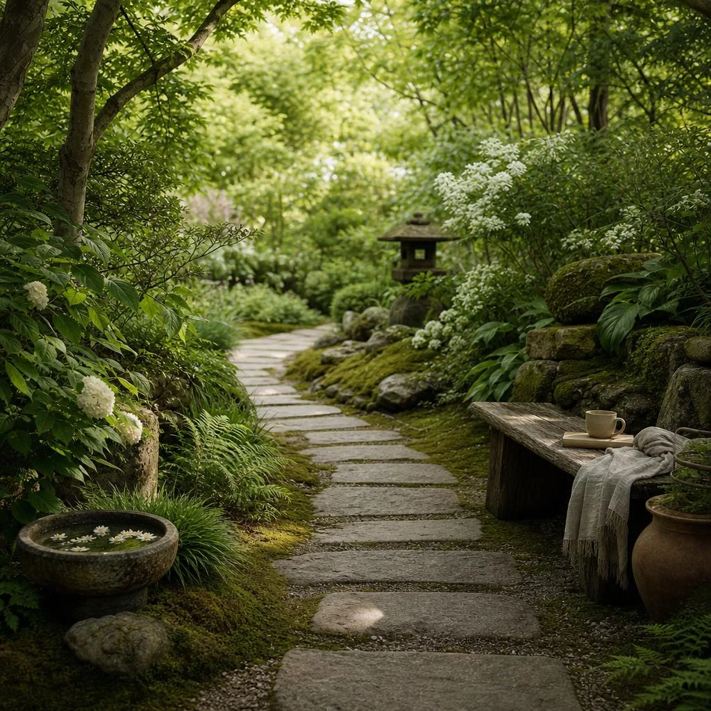
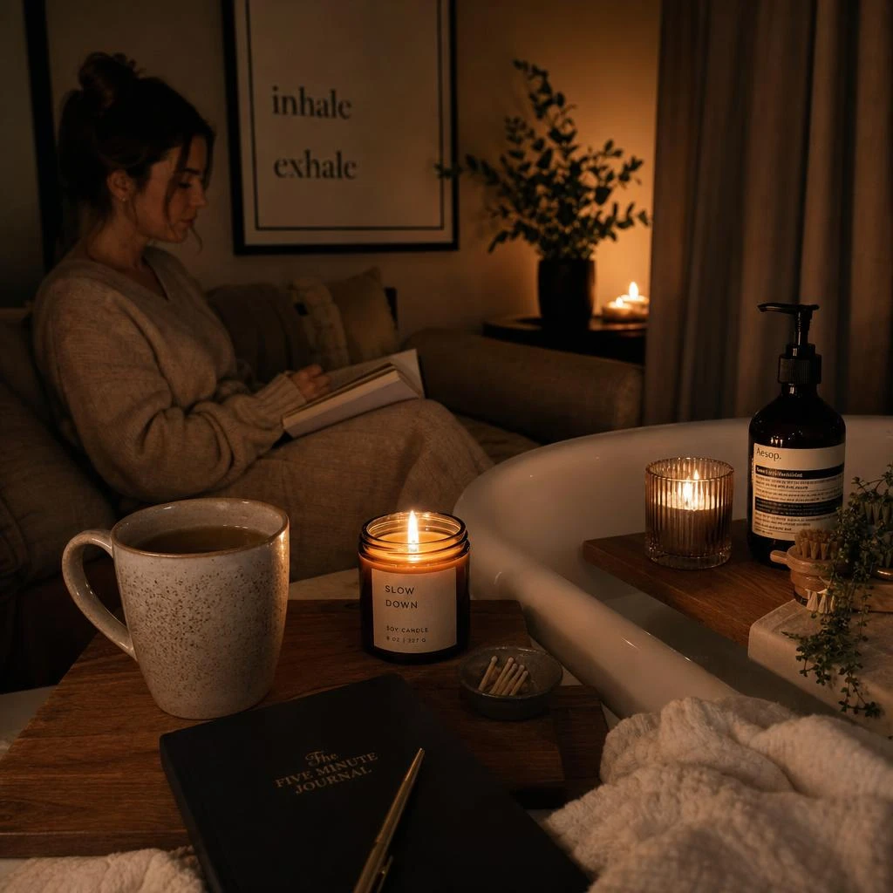
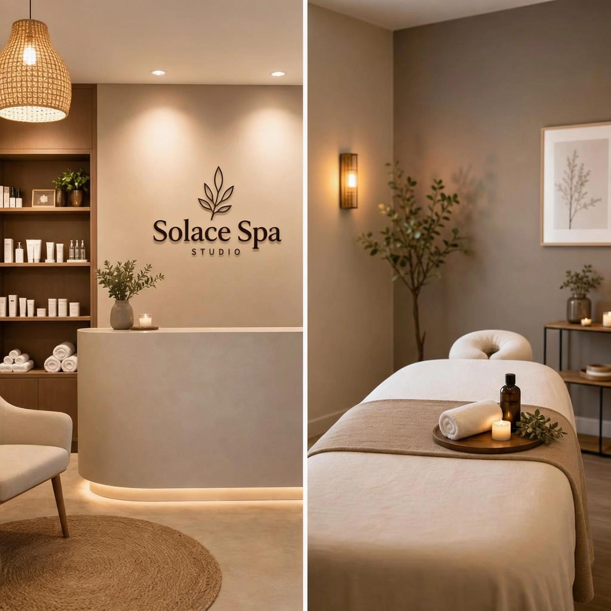

Signature Solace Massage
Long, flowing strokes and quiet pressure work to release the shoulders, hips, and breath. Finished with a warm herbal compress.

Mill Valley Sanctuary
Solace is a small spa studio devoted to unhurried treatments, botanical ritual, and the kind of rest that lingers after you leave.

The Studio Menu
Three restorative offerings, each paced to the body rather than the clock — designed for guests who prefer depth over spectacle.

Long, flowing strokes and quiet pressure work to release the shoulders, hips, and breath. Finished with a warm herbal compress.
A gentle cleanse, botanical steam, and mineral mask tailored to the skin’s present needs — never rushed, never aggressive.

Heated stones and slow massage to soften deep tension. Ideal after travel, long workdays, or a restless week.
Beyond the Table
Quiet practices that accompany your treatment — available as add-ons or as a slower way to arrive.
Scroll sideways to move through the gallery






Our House
We opened the studio as a place to put the day down. Not a resort, not a clinic — a small house of rooms where light is kept low, oils are mixed by hand, and every visit is given its full hour.
Our therapists work slowly, with botanicals sourced from nearby gardens and makers who share our preference for the unadorned. The rooms smell of cedar, citrus leaf, and warm linen.
Rest is not an afterthought. It is the treatment.Read Our Philosophy
Begin Gently
New guests often start with the Signature Solace Massage. If you are unsure, write to us — we will help you choose with care.